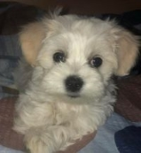

Borjana is one of the two children of Mirjana and Antonio.
Her mother Mirjana works in Alkaloid AD, in Skopje as a specialist in Quality Assurance.She graduated from Ss. Cyril and Methodius” University in Skopje, and by education she is graduated technology engineer.She is born on 29th of April 1970,in Prilep, North Macedonia and now she is fifty-two years old. When she married Antonio, she moved to Radovish. During the working days, from Monday to Friday, she stays in an apartment in Skopje because of work and for the weekends she usually goes back to Radovish to spend time with her family.
Borjanas’ father name is Antonio, who works as a manager, in Bucim, located in Radovish.He graduated from Ss. Cyril and Methodius” University in Skopje for mechanical engineering. He is born on 14th of June 1969 in Radovish, North Macedonia and now he is fifty-three years old.
Travijan is Borjanas’ bigger brother, he is the first child of Mirjana and Antonio. He was born on 13th of June 1997 and now he is twenty-five years old. He was going to the elementary school Nikola Karev, in Radovish, and graduated from Yahya Kemal college, located in Strumica. Now he is working as a dispatcher in an American company.
Borjana has a pet dog, her name is Lucy. She is born on 29th of January 2022, now she is five months old . She is maltese, her colour is white and she has black eyes and two kilos weight. She lives in the house, and Borjana got her as a gift for her 20th birthday. She is very playful, charming and intelligent dog.
